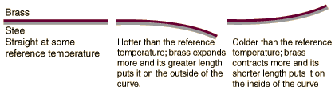

Bimetallic Strips
Bonding two metals with dissimilar thermal expansion coefficients can produce useful devices for detecting and measuring temperature changes. A typical pair is brass and steel with typical expansion coefficients of 19 and 13 parts per million per degree Celsius respectively.

The examples shown are straight strips, but bimetallic strips are made in coils to increase their sensitivity for use in thermostats. One of the many uses for bimetallic strips is in electrical breakers where excessive current through the strip heats it and bends it to trip the switch to interrupt the current.
|